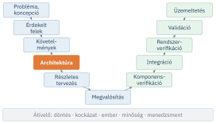
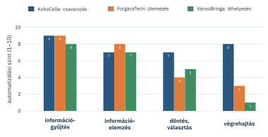

A fejezet feldolgozása után képes leszel:
- leírni a funkciómegosztás lépéseit, és megindokolni, miért „inkább művészet, mint tudomány”;
- alkalmazni a Fitts-listát és a megosztási kritériumokat, és megnevezni a módszer korlátait;
- az automatizálás szintjét Sheridan és Verplank tízfokú skáláján, az automatizálás típusát Parasuraman, Sheridan és Wickens négy szakasza szerint meghatározni;
- felismerni az automatizálás iróniáit és buktatóit (a helyzettudatosság elvesztése, a túlzott és a hiányos bizalom);
- ismertetni az ember–robot együttműködés módjait és biztonsági alapelveit;
- statikus és dinamikus (adaptív) funkciómegosztást tervezni, a leromlott üzemmódokat is beleértve.
Az architektúra kialakításakor a funkciókat a forma elemeihez rendeltük (8.5. szakasz). Ezek között az elemek között ott van az ember is: a kezelő, a karbantartó, a felhasználó. Az emberi rendszerintegráció egyik alapeszköze éppen a funkciók egyértelmű elosztása a rendszer elemei, vagyis a hardver, a szoftver és az ember között (11.2. szakasz). Melyik funkciót végezze az ember, melyiket a gép, és melyiket együtt? Ez a kérdés minden automatizálási projekt középpontjában áll, a KoboCella kobotjától a ForgácsTech ütemezőjéig.
A kérdésre csábító egyszerű választ adni: „amit lehet, automatizáljunk”. A tapasztalat azonban azt mutatja, hogy az automatizálás nem egyszerűen átveszi az ember feladatait, hanem meg is változtatja azokat. Új feladatokat (felügyelet, beavatkozás, hibaelhárítás) hoz létre, és ezek gyakran nehezebbek, mint a régiek voltak. Ez a fejezet a funkciómegosztás módszereit és az automatizálás emberi következményeit tárgyalja.
A fejezet négy kérdésre épül:
- Milyen elvek alapján osszuk meg a funkciókat ember és gép között?
- Hogyan írható le az automatizálás szintje és típusa?
- Milyen buktatói vannak az automatizálásnak?
- Hogyan működhet együtt biztonságosan az ember és a robot?
12.1. A funkciómegosztás feladata
A funkciómegosztásra nincs mechanikus eljárás, a tervezői ítéletnek itt különösen nagy a szerepe. A munka lépései:
- a funkciók azonosítása (a funkcióelemzésből, a használati esetekből, interjúkból és a vevői elvárásokból);
- annak azonosítása, ki a legmegfelelőbb az adott funkcióra: ember, automatika vagy a kettő együtt;
- annak eldöntése, hogy a megosztás statikus (a tervezéskor rögzített) vagy dinamikus, adaptív (a terheléstől és a helyzettől függően változó) legyen.
A funkciómegosztás a funkciófára épül (8.3. szakasz), és eredménye az allokációs táblázatban jelenik meg (8.5. szakasz). A különbség az, hogy itt kifejezetten azt vizsgáljuk, mit jelent egy-egy döntés az emberre nézve: milyen feladatai maradnak, mennyire terhelt, érti-e, mit csinál a gép, és be tud-e avatkozni, ha kell.
12.1.1. A Fitts-lista
A funkciómegosztás klasszikus eszköze a Fitts-lista, amely Fitts 1951-es, a légiforgalmi irányítás emberi tényezőiről szóló jelentéséből származik (Fitts 1951). A lista összeveti, miben jobb az ember és miben a gép. A 12.1. táblázat a lista szellemében, mai példákkal kiegészítve foglalja össze az összevetést.
| Tulajdonság | Gép | Ember |
|---|---|---|
| sebesség | kiváló | viszonylag lassú |
| kimenő teljesítmény | kiváló, állandó | viszonylag gyenge |
| következetesség | ideális, ismétlődő eseményeknél | megbízhatatlan; a tanulás és a kifáradás befolyásolja |
| információs kapacitás | többcsatornás | elsősorban egycsatornás |
| emlékezet | pontos, szó szerinti felidézés, korlátozott hozzáférés | elvek és stratégiák jobb felidézése, sokoldalú hozzáférés, innováció |
| logikai számítás | deduktív, bonyolult program, gyors és alapos, gyenge hibajavítás | induktív, egyszerűbb program, lassú, pontos, jó hibajavítás |
| érzékelés | jó mennyiségi értékelés, gyenge mintafelismerés | széles hatókör, sokoldalúság, ítélőképesség |
| észlelés | a változatossággal nehezen birkózik, zajérzékeny | a változásokkal jobban megbirkózik, zajérzékeny |
A Fitts-listát sokan kritizálták. A leggyakoribb ellenvetés, hogy a lista az embert és a gépet egymás helyettesítőiként kezeli, holott a jó rendszerekben kiegészítik egymást, és hogy a gépek képességei azóta jelentősen változtak. De Winter és Dodou mégis amellett érvelnek, hogy a lista azért maradt fenn hét évtizeden át, mert lényegi megállapításai, például hogy a gép a gyorsaságban, a pontosságban és az ismétlődő feladatokban, az ember az ítéletalkotásban, az alkalmazkodásban és a váratlan helyzetek kezelésében erősebb, ma is többnyire érvényesek, és a lista jó kiindulópontot ad a tervezői gondolkodáshoz (Winter és Dodou 2014).
12.1.2. Megosztási kritériumok
Price az ember és a gép relatív képességei alapján hat esetet különít el (Price 1985):
- nincs különbség az emberi és a gépi képességek között;
- az ember teljesítménye jobb;
- a gép teljesítménye jobb;
- a gép teljesítménye olyan gyenge, hogy a funkciót az embernek kell kiosztani;
- az ember teljesítménye olyan gyenge, hogy a funkciót a gépnek kell kiosztani;
- sem az ember, sem a gép teljesítménye nem elfogadható.
A 4. és az 5. eset egyértelmű. A 6. esetben a funkciót vagy a rendszert újra kell gondolni (a funkció megoldássemleges megfogalmazásától kezdve, 8.1. szakasz). Az 1–3. esetben a döntés nem csak a képességeken múlik. Price ezért további megosztási szempontokat is megnevez (Price 1985): az érték-egyensúlyt (mi a jó az emberi munka minősége szempontjából), a haszonelvű és költségalapú megosztást (mi a gazdaságos), és az érzelmi vagy kognitív támogatást szolgáló megosztást (mit fogadnak el és mit értenek az érintettek). A gyakorlatban mindhárom számít: egy technikailag és gazdaságilag indokolt automatizálás is megbukhat, ha az érintettek nem fogadják el, vagy ha az ember számára értelmetlen, monoton maradékfeladatot hagy.
A KoboCella csapata a funkciófa tizenhárom részfunkcióján végigment a Fitts-lista és a megosztási kritériumok szerint. A csavar meghúzása és a nyomaték mérése egyértelműen gépi funkció lett (3. és 5. eset: következetesség, pontosság, naplózhatóság). A motorház befogása az emberé maradt: a különböző változatok kezelése, a sérült alkatrész felismerése ítélőképességet igényel, és a gépi megoldás aránytalanul drága lett volna (2. eset, költségalapú szempont). A hibás darab jelölése megosztott funkció lett: a gép jelzi a tűrésen kívüli nyomatékot, az ember dönt a további teendőről (javítás vagy selejt). A csapat külön megvizsgálta az érzelmi szempontot is: az operátorokkal folytatott interjúk szerint a kezelők attól tartottak, hogy „a robot mellett csak adogatók lesznek”. Ezért a cella kezelőjének feladatai közé bekerült a minőségi ellenőrzés és a változatváltás is, a HMI pedig minden ciklusban visszajelzést ad a kezelőnek a kötés minőségéről.
12.2. Az automatizálás szintjei és típusai
Az automatizálás nem kétállású kapcsoló (ember vagy gép), hanem fokozatos. Sheridan és Verplank tízfokú skálája a döntés és a cselekvés kiválasztásának automatizálását írja le (12.2. táblázat) (Sheridan és Verplank 1978).
| Szint | Az automatika szerepe |
|---|---|
| 1 | a számítógép nem ad segítséget: mindenről az ember dönt, és ő cselekszik |
| 2 | a számítógép a döntési vagy cselekvési alternatívák teljes körét felkínálja, vagy |
| 3 | leszűkíti a választékot néhány lehetőségre, vagy |
| 4 | egy alternatívát javasol, és |
| 5 | végrehajtja a javaslatot, ha az ember jóváhagyja, vagy |
| 6 | korlátozott ideig lehetőséget ad az embernek a vétóra, mielőtt automatikusan végrehajtja, vagy |
| 7 | automatikusan végrehajtja, majd szükségszerűen tájékoztatja az embert, és |
| 8 | csak akkor tájékoztatja az embert, ha az kérdezi, vagy |
| 9 | csak akkor tájékoztatja az embert, ha az automatika úgy dönt, |
| 10 | a számítógép mindenről dönt, önállóan cselekszik, és figyelmen kívül hagyja az embert |
Parasuraman, Sheridan és Wickens ezt a gondolatot továbbfejlesztették. Szerintük az automatizálás nem egyetlen szinttel, hanem négy információfeldolgozási szakasz mentén írható le: az információgyűjtés (érzékelés, adatgyűjtés), az információelemzés (feldolgozás, következtetés, előrejelzés), a döntés és választás, valamint a végrehajtás. A négy szakaszban az automatizálás szintje egymástól függetlenül változhat (Parasuraman, Sheridan, és Wickens 2000). Egy rendszer így jellemezhető egy négyelemű automatizálási profillal. A szerzők azt is javasolják, hogy a megfelelő szintet szakaszonként az emberi teljesítményre gyakorolt hatás (terhelés, helyzettudatosság, beidegződés, készségek leépülése) és a megbízhatóság, valamint a döntési hibák költsége alapján válasszuk meg (Parasuraman, Sheridan, és Wickens 2000).

A 12.1. ábra a három eset egy-egy funkciójának profilját mutatja. A KoboCella csavarozása mind a négy szakaszban magas szintű: a gép gyűjti az adatokat, értékeli a nyomatékot, dönt a megfelelőségről és végre is hajtja a műveletet (a kezelőt tájékoztatja). A ForgácsTech ütemezése az információgyűjtésben és -elemzésben magas, a döntésben viszont szándékosan alacsonyabb szintű (4: egy javaslatot ad), a végrehajtásban pedig a műszakvezetőé a szó. A VárosiBringa áthelyezése hasonló: az áthelyezés-tervező javaslatot tesz a következő útvonalra, de a fizikai végrehajtás teljes egészében emberi.
A ForgácsTech MES-ütemezőmodulja technikailag képes lenne önállóan átsorolni a rendeléseket egy gépleállás után (7-es szint). A csapat mégis a 4-es szint mellett döntött: az ütemező egy átsorolási javaslatot ad a várható késésekkel, és a műszakvezető hagyja jóvá vagy módosítja. Az indoklás három pontból állt. Először: a műszakvezető olyan információkat is ismer, amelyek a rendszerben nincsenek meg (például hogy egy vevő elfogad-e részszállítást). Másodszor: a döntési hibák költsége magas, egy rossz átsorolás a két legnagyobb vevő egyikét is érintheti. Harmadszor: a névleges csoportos elemzés (9.3. szakasz) szerint a késések első számú oka a szóbeli előresorolás volt; ha az ütemező teljesen automatikusan dönt, a műszakvezetők a rendszert megkerülve folytatnák a régi gyakorlatot. A jóváhagyási lépés az átsorolást láthatóvá és naplózottá teszi. A csapat rögzítette, hogy egy év üzemi tapasztalat után a szint emelését újra megvizsgálja.
12.3. Az automatizálás iróniái és buktatói
Bainbridge nagy hatású tanulmánya az automatizálás iróniáit írta le (Bainbridge 1983). Az első irónia, hogy a tervezők, akik az embert megbízhatatlannak tartják, és ezért automatizálnak, maguk is emberek, és a tervezési hibáik az automatikában jelennek meg. A második, hogy az automatizálás után az embernek azok a feladatok maradnak, amelyeket a tervezők nem tudtak automatizálni: a ritka, váratlan, nehéz helyzetek kezelése. Ehhez azonban gyakorlat és naprakész helyzetismeret kellene, amelyet az ember éppen az automatizálás miatt veszít el. Aki csak felügyeli a gépet, annak kézi készségei leépülnek, és a beavatkozás pillanatában nem érti pontosan, mi történik.
Parasuraman és Riley az automatizálás négy problémás használati módját különítették el (Parasuraman és Riley 1997):
- helyes használat (use): az ember akkor támaszkodik az automatikára, amikor kell;
- túlzott támaszkodás (misuse): az ember akkor is az automatikára hagyatkozik, amikor nem kellene, például nem veszi észre a hibáit (automatizálási torzítás, elkényelmesedés);
- mellőzés (disuse): az ember nem használja az automatikát, például a túl gyakori téves riasztások miatt figyelmen kívül hagyja a jelzéseit;
- visszaélés (abuse): a tervezők vagy a vezetők anélkül automatizálnak, hogy figyelembe vennék a következményeket az ember teljesítményére.
A középpontban a bizalom áll. Lee és See áttekintése szerint a cél nem a bizalom maximalizálása, hanem a kalibrált bizalom: az ember bizalma igazodjon az automatika tényleges képességeihez. A túlzott bizalom túlzott támaszkodáshoz, a hiányos bizalom mellőzéshez vezet. A kalibrált bizalmat az segíti, ha az automatika átlátható: a kezelő látja, mit csinál, miért, és mennyire biztos benne (Lee és See 2004).
A buktatók elleni tervezési elvek:
- tartsd a hurokban az embert: a felügyeleti feladat mellett maradjanak aktív feladatai, és a kijelzők a helyzettudatosság mindhárom szintjét támogassák (11.4. szakasz);
- tedd átláthatóvá az automatikát: a kezelő lássa az automatika állapotát, szándékát és bizonytalanságát;
- kezeld a téves riasztásokat: a túl sok téves riasztás mellőzéshez vezet; a riasztási küszöböket a téves és az elmulasztott riasztások költségének egyensúlya alapján kell beállítani;
- gyakoroltasd a kézi üzemet: ha az automatika kieshet, az embernek gyakorlatban kell maradnia a kézi működtetésben.
A KoboCella első HMI-tervében a kezelőnek minden tűrésen kívüli nyomaték után egy gombnyomással kellett nyugtáznia a hibajelzést. A próbaüzemben kiderült, hogy a kezelők a második-harmadik nap után rutinszerűen, a jelzés elolvasása nélkül nyomták meg a gombot: a nyugtázás a mozdulatsor része lett (túlzott támaszkodás, Parasuraman és Riley kategóriájában). A csapat két változtatást vezetett be. A hibás darab nem kerülhet a kiadóba, amíg a kezelő nem helyezte át a selejtdobozba, amit érzékelő ellenőriz (a nyugtázás helyett fizikai cselekvés). A HMI pedig a hiba helyét is megmutatja (melyik csavar), így a kezelő ténylegesen ellenőrizni tudja a darabot. A leromlott üzemmódra (UM-7) a csapat negyedéves kézi gyakorlást írt elő, hogy a kézi szerelési készség ne vesszen el.
12.4. Ember–robot együttműködés
Az együttműködő robotok (kobotok) a funkciómegosztás egy különleges formáját teszik lehetővé: az ember és a robot közös munkaterületen, védőkerítés nélkül dolgozik. Az ipari robotok biztonsági követelményeit az ISO 10218 szabványsorozat rögzíti: az 1. rész a robotokra, a 2. rész a robotalkalmazásokra és robotcellákra vonatkozik (ISO 2025a, 2025b). A 2025-ös kiadás beépítette az együttműködő alkalmazások korábban külön műszaki specifikációban (ISO/TS 15066) rögzített biztonsági követelményeit is.
Az együttműködő működésnek négy alapvető módja van:
- biztonsági felügyelt megállás: a robot megáll, amikor az ember belép a közös munkaterületre, és csak akkor folytatja, amikor kilépett;
- kézi vezetés: az ember közvetlenül, kézzel vezeti a robotot (például betanításkor);
- sebesség- és távolságfelügyelet: a robot sebességét az ember távolságától függően csökkentik, és a robot megáll, mielőtt a távolság egy kritikus érték alá csökkenne;
- teljesítmény- és erőkorlátozás: a robot tervezése és vezérlése korlátozza az érintkezéskor fellépő erőket és nyomásokat, így az érintkezés nem okoz sérülést.
A módok kiválasztása a kockázatértékelés eredménye (17. fejezet), és egy cellán belül többféle mód is alkalmazható.
A KoboCella koncepciójában a védőzónát lézerszkenner figyeli, sebességkorlátozással (9.4. szakasz). Ez a sebesség- és távolságfelügyelet módja: amikor a kezelő belép a közös zónába, a kobot csökkentett sebességre vált (R-11: legfeljebb 250 mm/s), és ha a kezelő a kritikus távolságon belülre kerül, megáll. A csapat azért nem a teljesítmény- és erőkorlátozást választotta egyedüli védelemként, mert a csavarozó fej éles bitbetétje a kezelő keze közelében mozog, és ennél a szerszámnál az érintkezés még korlátozott erő mellett is sérülést okozhatna. A választást a kockázatértékelés indokolja, amelyet a 17. fejezet mutat be.
12.5. Statikus és dinamikus megosztás
A statikus megosztás a tervezéskor rögzíti, ki mit csinál. Egyszerű, kiszámítható és könnyen betanítható, de nem alkalmazkodik a változó helyzetekhez. A dinamikus vagy adaptív megosztás a helyzettől függően változtatja a feladatok elosztását: nagy terhelésnél több feladatot vesz át az automatika, kis terhelésnél vagy az automatika meghibásodásakor több marad az emberé.
A dinamikus megosztás legfontosabb gyakorlati formája a leromlott üzemmód: ha egy automatikus funkció kiesik, a rendszer csökkentett képességgel, nagyobb emberi részvétellel tovább működik. Ezt a működési koncepcióban kell megtervezni (4.4. szakasz), mert minden leromlott üzemmód új követelményeket szül: az embernek képesnek kell lennie átvenni a funkciót, a kezelőfelületnek támogatnia kell az átvételt, és az átvételt gyakorolni kell.
A dinamikus megosztás kockázata a módzavar: a kezelő nem tudja pontosan, melyik üzemmódban van a rendszer, és ennek megfelelően rosszul cselekszik. Ezért minden üzemmódváltásnak egyértelműen jelzettnek kell lennie, és az átmeneteket a forgatókönyvekben végig kell gondolni.
A VárosiBringa áthelyezés-tervezője a kölcsönzési adatokból előrejelzi, melyik állomás fog kiürülni vagy megtelni, és javaslatot tesz a furgonos áthelyezés útvonalára. A csapat a forgatókönyvek elemzésekor felismerte, hogy rendezvények, útlezárások vagy hirtelen időjárás-változás esetén az előrejelzés megbízhatatlan. Ezért két üzemmódot terveztek: normál üzemben a sofőr a javasolt útvonalat követi (5-ös szint: a rendszer javasol, az ember jóváhagyja), rendkívüli helyzetben pedig a diszpécser kézi üzemmódra válthat, amelyben a rendszer csak az állomások aktuális állapotát mutatja, és az útvonalat a diszpécser állítja össze (2–3-as szint). Az üzemmód a sofőr kijelzőjén mindig látható, és minden váltást naplóznak, hogy utólag elemezni lehessen, mikor és miért tért el az ember a javaslattól.
A gépi tanulási és nyelvi modelleken alapuló döntéstámogató rendszerek egyre gyakrabban az információelemzés és a döntés szakaszában jelennek meg: hibát diagnosztizálnak, ütemezést javasolnak, karbantartást ütemeznek. A Parasuraman–Sheridan–Wickens-modell erre is jól alkalmazható. Különösen fontos a kalibrált bizalom: a modellek hibái gyakran nem szembetűnők, és a felhasználó a meggyőzően megfogalmazott javaslatot hajlamos ellenőrzés nélkül elfogadni. A tervezési elvek ugyanazok: átláthatóság (miért ezt javasolja, mennyire biztos benne), a döntési jogkör egyértelmű kijelölése, és annak megtervezése, mi történik, ha a javaslat téves.
A „technológiai imperatívusz” az a hozzáállás, hogy mindent automatizálni kell, ami technikailag automatizálható, és az embernek a maradék jut. Ez Bainbridge iróniájához vezet: az ember feladatai töredezettek, monotonok és ritkán gyakorolt vészhelyzeti beavatkozásokból állnak. A funkciómegosztást az ember szempontjából is meg kell tervezni: a megmaradó feladatoknak együtt értelmes, kezelhető és gyakorolható munkát kell alkotniuk.
- A funkciómegosztás eldönti, mit végezzen az ember, mit a gép és mit együtt. Lépései a funkciók azonosítása, a legalkalmasabb végrehajtó kiválasztása és a statikus vagy dinamikus megosztás eldöntése.
- A Fitts-lista az ember és a gép relatív erősségeit veti össze. Kritikusai szerint a kettőt helyettesítőként kezeli, mégis máig hasznos kiindulópont. A képességek mellett az érték-egyensúly, a költség és az elfogadottság is megosztási szempont.
- Sheridan és Verplank tíz szintje a döntés és a cselekvés automatizálásának fokát írja le. Parasuraman, Sheridan és Wickens szerint az automatizálás négy szakaszban (információgyűjtés, -elemzés, döntés, végrehajtás) eltérő szintű lehet.
- Az automatizálás iróniája, hogy az embernek a legnehezebb, legritkább feladatok maradnak, miközben készségei és helyzettudatossága leépül. A túlzott támaszkodás, a mellőzés és a visszaélés elkerülésének kulcsa a kalibrált bizalom és az átlátható automatika.
- Az együttműködő robotok biztonságát az ISO 10218 szabványsorozat szabályozza; a négy együttműködési mód a felügyelt megállás, a kézi vezetés, a sebesség- és távolságfelügyelet, valamint a teljesítmény- és erőkorlátozás.
- A dinamikus megosztás legfontosabb formája a leromlott üzemmód, amelyet a működési koncepcióban kell megtervezni. Az üzemmódokat egyértelműen jelezni kell a módzavar elkerülésére.
- Miért mondják a funkciómegosztásra, hogy „inkább művészet, mint tudomány”?
- Hogyan osztanád meg a Fitts-lista alapján egy raktári komissiózás két funkcióját: (a) a megfelelő tétel kiválasztása egy polcról, (b) a kiszedett mennyiség ellenőrzése?
- Melyik Sheridan–Verplank-szinten működik egy navigációs alkalmazás, amely útvonalat javasol, és csak akkor indul, ha a felhasználó jóváhagyja? És egy autó vészfékasszisztense?
- Írd fel egy laboratóriumi mintaelemző automata automatizálási profilját a négy szakaszban!
- Mi Bainbridge második iróniája? Mivel csökkenthető a hatása?
- Mi a különbség a túlzott támaszkodás és a mellőzés között? Mi okozhatja az utóbbit egy riasztórendszernél?
- Miért nem elég a KoboCellánál a teljesítmény- és erőkorlátozás?
Megoldás
- Mert a döntés sok, egymással nehezen összemérhető szemponton múlik: a képességeken, a költségen, az érintettek elfogadásán, a munka minőségén és a ritka helyzetek kezelésén, és ezekre nincs egyetlen, mechanikusan alkalmazható szabály.
- A változatos tételek felismerése és megfogása mintafelismerést és ügyességet igényel; ez hagyományosan az ember erőssége (bár a gépi látás fejlődik). (b) A mennyiség ellenőrzése pontosságot és következetességet igényel; ez a gépé (mérleg vagy vonalkód-olvasás).
- A navigációs alkalmazás az 5-ös szinten működik (végrehajtja, ha az ember jóváhagyja). A vészfékasszisztens a 7-es szint körül (automatikusan végrehajtja, majd tájékoztat), mert a reakcióidő nem teszi lehetővé az emberi jóváhagyást.
- Például: információgyűjtés 9 (a minták automatikus azonosítása és mérése), elemzés 8 (az eredmények automatikus értékelése a referenciatartományokhoz), döntés 4 (a kóros eredményt a rendszer jelzi, a szakember dönt), végrehajtás 7 (a jóváhagyott eredmény automatikusan továbbítódik, a rendszer tájékoztat).
- Az automatizálás után az embernek a ritka, váratlan, nehéz helyzetek kezelése marad, miközben az ehhez szükséges gyakorlata és helyzetismerete éppen az automatizálás miatt leépül. Csökkenthető rendszeres gyakorlással (szimuláció, kézi üzem), aktív feladatokkal a felügyelet mellett és átlátható kijelzőkkel.
- Túlzott támaszkodásnál az ember akkor is az automatikára hagyatkozik, amikor nem kellene (nem veszi észre a hibáit); mellőzésnél nem használja, amikor kellene. Riasztórendszernél a mellőzés gyakori oka a sok téves riasztás: a kezelő megtanulja figyelmen kívül hagyni a jelzéseket.
- Mert a csavarozó fej éles bitbetétje a kezelő keze közelében mozog, és ennél a szerszámnál az érintkezés korlátozott erő mellett is sérülést okozhat. Ezért sebesség- és távolságfelügyelet kell, amely megakadályozza az érintkezést.
Saját fejlesztési feladatodhoz:
- válaszd ki a funkciófa legalább hat funkcióját, és osszd meg őket ember, gép vagy együttes végrehajtás között a Fitts-lista és a megosztási kritériumok alapján, indoklással;
- a két legfontosabb automatizált funkcióhoz határozd meg az automatizálási profilt a négy szakaszban;
- írd le, milyen feladatai maradnak az embernek, és értelmes, gyakorolható munkát alkotnak-e;
- tervezz legalább egy leromlott üzemmódot, és írd le, milyen követelményeket szül.
A funkciómegosztás sablonja és notebookja a Gyakorlati útmutatóban található.
- Parasuraman, Sheridan, és Wickens (2000): az automatizálás típusainak és szintjeinek modellje; a funkciómegosztás egyik legtöbbet hivatkozott tanulmánya.
- Bainbridge (1983): az automatizálás iróniái; rövid, ma is aktuális klasszikus.
- Parasuraman és Riley (1997) és Lee és See (2004): az automatizálás használata, a visszaélések és a kalibrált bizalom.
- Winter és Dodou (2014): a Fitts-lista kritikája és tartós érvényességének magyarázata.
- ISO (2025b): az együttműködő robotalkalmazások biztonsági követelményei.
- NASA (2015): az emberi rendszerintegráció gyakorlati útmutatója, a funkciómegosztás és a feladatelemzés helyével a fejlesztésben.